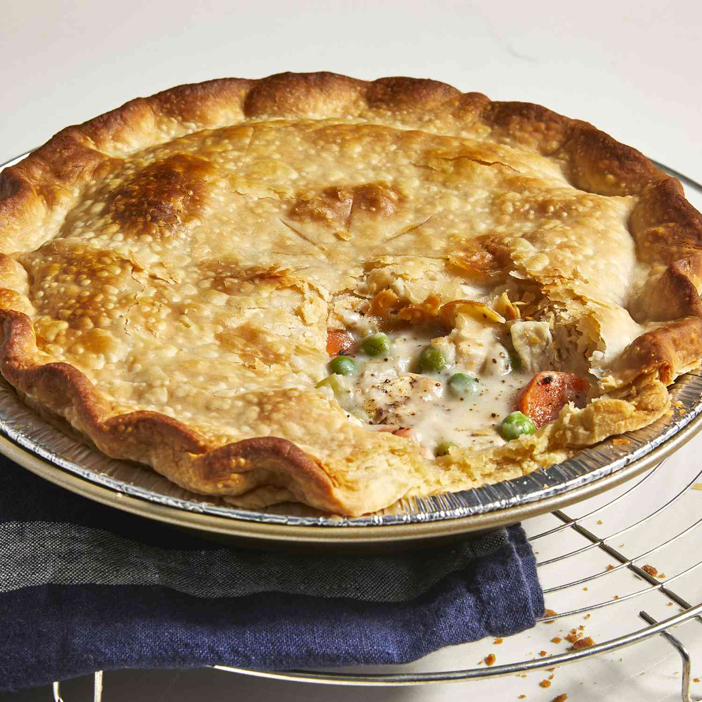

Chicken Pot Pie Recipe

Description
Every home cook needs a good chicken pot pie recipe in their
repertoire. On the hunt for a new family favorite? You're in
luck! This homemade chicken pot pie definitely deserves a
permanent spot in your recipe box.
Required Ingredients
- 1 pound skinless, boneless chicken breast halves -
cubed
- 1 cup sliced carrots
- 1 cup frozen green peas
- 1/2 cup sliced celery
- 1/3 cup butter
- 1/3 cup chopped onion
- 1/3 cup all-purpose flour
- 1/2 teaspoon salt
- 1/4 teaspoon black pepper
- 1/4 teaspoon celery seed
- 1 3/4 cups chicken broth
- 2/3 cup milk
- 2 (9 inch) unbaked pie crusts
Directions
- Gather all ingredients and preheat the oven to 4255
degrees Farenheit (220 degrees Celcius)
- Combine chicken, carrots, peas, and celery in a
saucepan; add water to cover and bring to a boil. Boil for
15 minutes, then remove from the heat and drain
- While the chicken is cooking, melt butter in another
saucepan over medium heat. Add onion and cook until soft and
translucent, 5 to 7 minutes. Stir in flour, salt, pepper,
and celery seed.
- Slowly stir in chicken broth and milk
- Reduce heat to medium-low and simmer until thick, 5 to
10 minutes. Remove from heat and set aside.
- Place chicken and vegetables in the bottom pie crust.
Pour hot liquid mixture over top.
- Cover with top crust, seal the edges, and cut away any
excess dough. Make several small slits in the top crust to
allow steam to escape
- Bake in the preheated oven until pastry is golden brown
and filling is bubbly, 30 to 35 minutes. Cool for 10 minutes
before serving
- Serve immediately and enjoy!